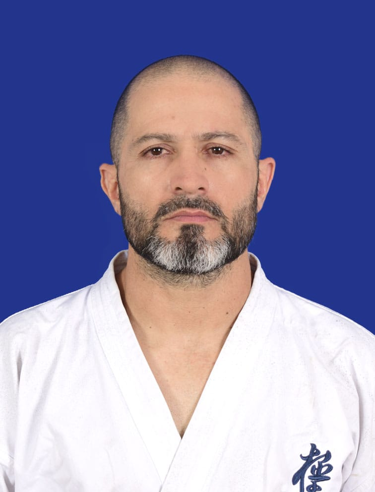

Quiénes somos
Somos un dojo dedicado a la enseñanza del Karate Kyokushin, un arte marcial que combina fuerza, disciplina y respeto. Con años de experiencia, ayudamos a nuestros estudiantes a desarrollar habilidades físicas y mentales, promoviendo valores fundamentales para la vida diaria.
Nuestros horarios
- Lunes, Miercoles y Viernes: 7:30 PM - 9:00 PM
- Martes y Jueves: 7:30 PM - 9:00 PM
- Clases personalizadas horario flexible
Sensei
Conoce a nuestro Sensei, un maestro con más de 20 años de experiencia en el arte del Kyokushin:
El Sensei Leonardo Cabeza alcanzo el grado de cinturon negro 1° dan de karate deportivo y kung fu, actualmente ostenta el grado cinturon negro 2° dan internacional de Kyokushin Karate y 1° dan internacional de Senshi Kickboxing, ha entrenado a cientos de estudiantes, inculcando disciplina, fortaleza y humildad en cada lección.
¿Qué significa Karate Kyokushin?
Kyokushin significa "la verdad última" y es un estilo de Karate fundado por Masutatsu Oyama. Se caracteriza por su enfoque en el contacto total y la fortaleza mental. Practicar Kyokushin no solo fortalece el cuerpo, sino también la mente, enseñando a los estudiantes a enfrentar los desafíos con determinación y respeto.
Contáctanos
Teléfono: +314 219 0533
Instagram: kyokyshinkaratebucaramanga
Dirección: Calle 33 #25-66 Antonia Santos